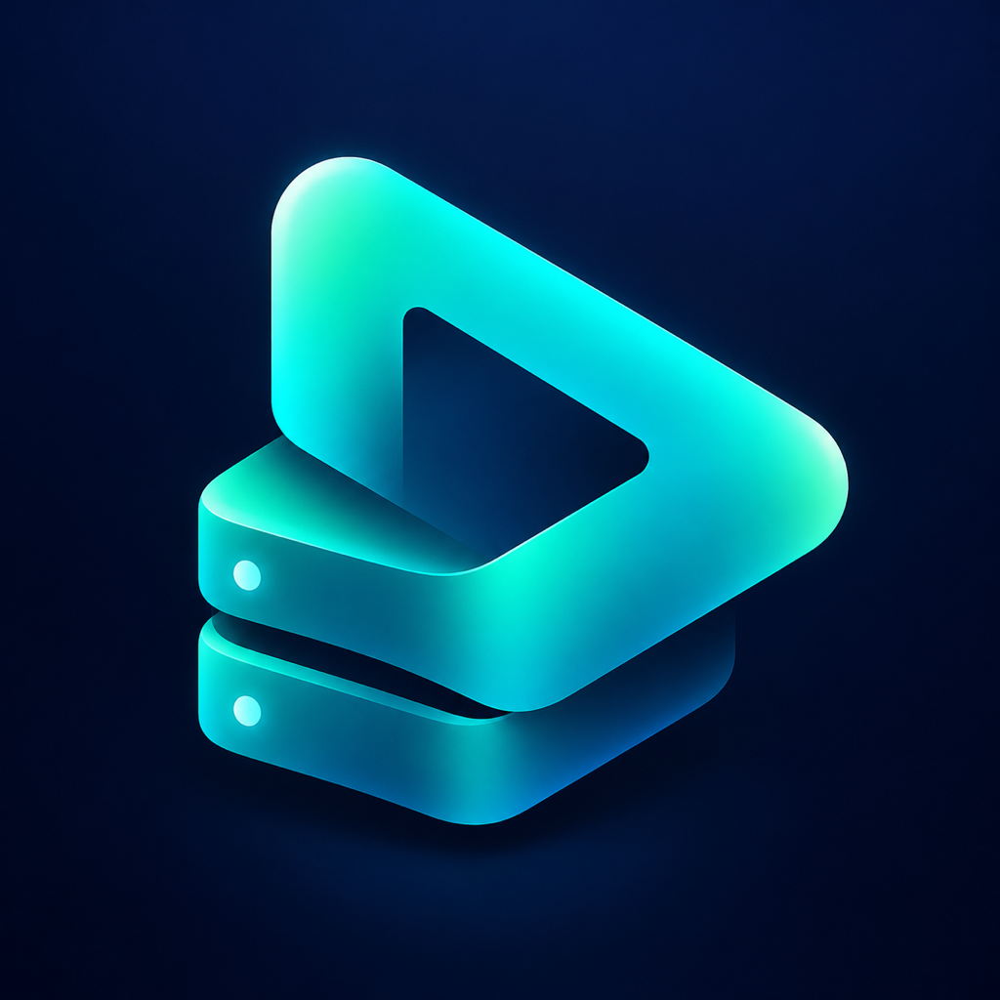

连接自己的片库
SMB 自动发现共享，也支持 WebDAV。媒体保留在你选择的服务器上。
浏览 NAS 或设备文件夹，打开即播。收藏常看的目录，随时接着上次的进度观看。
正在准备 App Store 发布iPhone · iPad · Mac

SMB 自动发现共享，也支持 WebDAV。媒体保留在你选择的服务器上。
收藏 NAS 与本地文件夹，在本机保存播放队列和观看记录。
全屏、进度拖动、音轨与字幕。横向和竖向视频保持正确比例。
计划首发价：每个平台 US$2.99，一次购买。iOS/iPadOS 与 Mac 分别购买，各地区价格可能不同。不含订阅或内购，开放地区以正式上架为准。
不提供影视内容。请播放自己拥有或获授权访问的媒体。